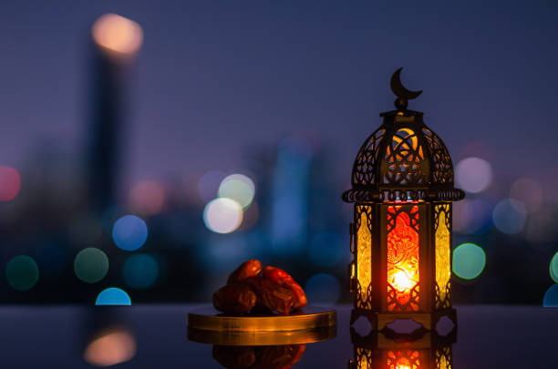

|
|
Home | About | Services | Contact |
|
Welcome to Our Ramadan Website |
Ramadan KareemWelcome to our special Ramadan website. During this blessed month, Muslims worldwide observe fasting from dawn to sunset. This is a time of spiritual reflection, increased charity, and devotion. Key Features of Ramadan:
|
| © 2025 Ramadan Website. All rights reserved. |